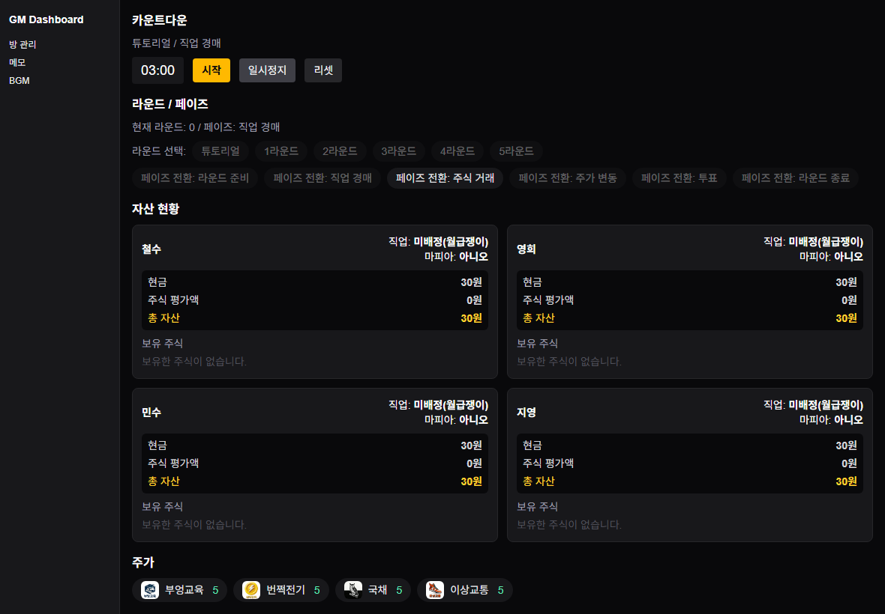
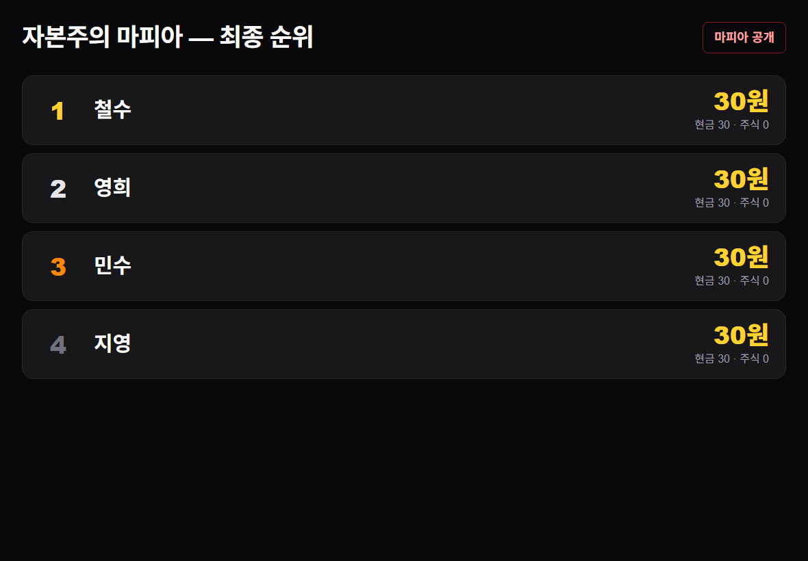

🦉 자본주의 마피아 — GM 가이드
무너진 도시의 경제를 재건하는 머니 게임입니다. 참가자는 라운드마다 직업을 경매로 얻고, 주식을 사고팔고, 경제사범을 투표로 가려냅니다. 그 속에 숨은 마피아는 몰래 주가를 흔듭니다. 규칙 · 진행 · 대시보드 사용법 · 플레이어 플레이 방식을 모두 담았습니다.
• 권장 인원 — 약 4~8명 (화면 예시는 4명)
• 예상 소요시간 — 약 1.5~2시간 (튜토리얼 2라운드 + 본게임 5라운드, 각 라운드 4단계)
• 한 줄 목표 — 최종 자산(보유 주식 평가액 + 현금)이 가장 많은 사람이 우승. 시작 현금은 30원입니다.
링크
아래 세 가지만 있으면 진행할 수 있습니다. 모두 새 탭으로 열립니다.
- 룰북(PDF) — 자본주의 마피아 룰북 ↗
- 방 관리 화면(GM) — 방 만들기 · 참가자 등록 · 대시보드 입장 ↗
- 플레이어 입장 — 참가자가 방 코드 + 닉네임으로 들어오는 곳 ↗
게임 소개 · 목표
도입 멘트(예시) — "도시의 경제 기반이 무너졌습니다. 직업을 얻고, 투표하고, 돈을 벌어 경제를 재건하세요. 최종 자산이 가장 많은 사람이 우승합니다."
모든 참가자는 현금 30원으로 시작합니다. 라운드마다 직업을 경매로 사고, 주식을 거래하고, 경제사범을 투표로 가립니다. 참가자 중 일부는 비밀리에 마피아이며, 몰래 주가를 조작합니다. 게임이 끝났을 때 보유 주식 평가액 + 현금이 가장 많은 사람이 우승합니다(동점이면 현금이 많은 쪽).
1. 방 만들기 + 참가자 등록
한 개의 사이트가 여러 방을 동시에 운영합니다. GM이 방을 만들면 방 코드(예 A3F82)가 발급되고, 그 코드를 받은 참가자만 입장합니다. 마피아 방과 디펜스 방은 각각 따로 만들어 운영합니다.
- 방 관리 화면(/dashboard/x9a2k7)을 엽니다. → 바로 열기 ↗
- [+ 마피아 방] 버튼을 누릅니다. 방 코드(예 A3F82)가 발급됩니다.
- 그 방의 [참가자]에서 이번 팀의 닉네임을 모두 등록합니다. (여기 등록한 사람만 입장할 수 있습니다.)
- 발급된 방 코드를 참가자에게 안내합니다.
참가자는 닉네임을 등록하고 방 코드를 받으면 바로 입장할 수 있습니다. GM이 따로 "준비 상태"로 만들 필요는 없습니다. 입장하면 초기 상태로 대기합니다.

2. 진행 순서 (GM 대시보드)
방 관리에서 그 방의 [대시보드 입장]을 누르면 아래 화면이 열립니다. 화면에는 카운트다운(타이머), 현재 라운드 · 단계, 모든 참가자의 자산 현황, 종목별 주가가 보입니다. 버튼은 지금 눌러야 할 것 위주로 보이니, 화면 흐름대로 따라가면 됩니다.

① 게임 만들기 · 튜토리얼
먼저 이 방으로 게임을 시작합니다. 이 방에 등록한 참가자 명단으로 게임이 만들어지고, 모두 현금 30원으로 시작합니다. 처음이라면 튜토리얼 2라운드를 돌려 흐름을 익히게 하는 것을 권합니다. 튜토리얼도 본게임과 같은 4단계로 진행됩니다.
② 본게임 (5라운드) — 라운드마다 4단계 반복
본게임은 총 5라운드입니다. 한 라운드 안에서 아래 네 단계를 차례로 진행합니다. 각 단계마다 화면의 타이머가 돌고, 시간이 끝나면 다음 단계 버튼을 누릅니다.
단계 1 — 직업 경매 (약 3분)
- 경매 단계를 시작하면 참가자들이 7개 직업 중 하나에만 베팅 금액을 비공개로 적습니다.
- 시간이 끝나면 경매를 정산합니다. 직업마다 가장 높은 금액을 적은 사람이 낙찰받고, 그 금액을 즉시 지불합니다. 떨어진 사람은 베팅액을 전액 돌려받습니다.
- 아무 직업도 낙찰받지 못한 사람은 월급쟁이가 됩니다(현금 +3원).
같은 금액(동률)이면 그다음으로 높은 금액을 적은 사람이 차지합니다. 직업은 라운드마다 초기화되어 다시 경매합니다.
단계 2 — 주식 거래 + 능력 사용 (약 10분)
- 참가자들이 비공개로 주식을 매수/매도하고, 가진 직업 능력도 이 단계에 비공개로 사용합니다.
- 같은 라운드에 같은 종목을 동시에 사고팔 수는 없습니다. 현금이 모자라거나 음수가 되는 매수는 불가합니다.
- 시간이 끝나면 다음 단계(주가 변동)로 넘깁니다.
단계 3 — 주가 변동 적용
- 화면이 매수/매도량을 집계해 주가를 자동으로 움직입니다. 결과만 공개되고, 변동 규칙 자체는 참가자에게 비공개입니다.
- 이때 결과 중계 페이지를 빔/모니터에 띄워 바뀐 주가를 보여주세요(아래 3번).
참고(GM용): 매수량 1위 종목 +2, 2위 +1, 매도량 1위 종목 -1(공동 순위 포함). 거래량이 1개 이상일 때만 적용됩니다. 마피아의 주가조작도 여기서 함께 반영됩니다(국채는 조작 대상에서 제외). 최소 주가는 1원입니다.
단계 4 — 경제사범 투표 (약 5분)
- 참가자들이 비공개로 경제사범 후보에게 투표합니다. 표를 던지려면 표 값(기본 1원, 시장 능력으로 최대 3원)을 내야 합니다.
- 시간이 끝나면 집계합니다. 최다 득표자가 경제사범이 되어 국채 가격만큼 벌금을 냅니다(현금이 음수가 될 수 있음). 최다 득표가 2명 이상이면 경제사범은 없습니다.
- 화면이 마피아 관련 효과를 자동으로 처리합니다(아래 규칙 참고). 결과를 중계 페이지로 보여주세요.
- 다음 라운드로 넘어가 다시 단계 1부터 반복합니다.
③ 종료
본게임 5라운드의 투표까지 끝내면 게임이 종료되고, 화면에 최종 자산 순위(보유 주식 평가액 + 현금)가 표시됩니다.
3. 결과 중계 페이지 (빔/모니터 송출)
GM 대시보드에서 [결과 페이지 ↗](또는 결과 화면 열기) 버튼을 누르면 그 방의 마피아 중계 화면이 새 탭으로 열립니다. 빔/모니터에 띄워 참가자 전체에게 보여주세요.

4. 플레이어 입장 & 플레이 방식
참가자는 플레이어 입장 페이지 ↗에서 방 코드 + 닉네임을 입력해 들어옵니다(아래 휴대폰 화면 참고). 입장하면 바로 게임에 참여합니다.
- 경매에서 직업 하나에 베팅 금액 입력.
- 거래에서 주식 매수/매도 + 직업 능력 사용(모두 비공개).
- 투표에서 경제사범 후보에 투표(표 값 지불).
- 결과는 단계가 정산될 때 결과 페이지/내 화면에서 확인.

5. 규칙 (상세)
주식 4종목
초기 주가는 모두 5원. 최소 주가 1원, 최대 제한 없음. 국채는 주가 조작 대상에서 제외됩니다.
| 종목 | 비고 |
|---|---|
| 국채 | 마피아 주가조작 대상 아님 · 경제사범 벌금/시민 보상의 기준 가격 |
| 번쩍전기 | 일반 종목 |
| 이상교통 | 일반 종목 |
| 부엉교육 | 일반 종목 |
라운드 4단계 요약
| 단계 | 시간 | 내용 |
|---|---|---|
| 1. 직업 경매 | 약 3분 | 7개 직업 중 하나에 비공개 베팅 → 최고액 낙찰(즉시 지불), 떨어지면 전액 환불, 미낙찰자는 월급쟁이 |
| 2. 주식 거래 + 능력 | 약 10분 | 매수/매도 비공개 입력 + 직업 능력 비공개 사용(다음 단계 반영) |
| 3. 주가 변동 | — | 매수/매도량으로 주가 변동 + 마피아 조작 반영, 결과만 공개 |
| 4. 경제사범 투표 | 약 5분 | 표 값 내고 비공개 투표 → 최다 득표자 경제사범(벌금) · 마피아 효과 처리 |
주가 변동 규칙 (단계 3, GM 참고용 · 참가자에게 비공개)
- 매수량 1위 종목 +2, 2위 종목 +1 (공동 순위 포함).
- 매도량 1위 종목 -1 (공동 순위 포함).
- 해당 거래량이 1개 이상일 때만 적용됩니다.
- 여기에 마피아의 주가조작이 더해집니다(국채 제외). 최소 주가 1원.
경제사범 투표 결과 (단계 4)
- 최다 득표자 = 경제사범 → 국채 가격만큼 벌금(현금 음수 가능). 최다 득표 2명 이상이면 경제사범 없음.
- 마피아가 경제사범이면 → 국채 +1원, 시민 전원 국채 1개 획득(경제사범은 오른 가격으로 벌금).
- 마피아가 경제사범이 아니거나 경제사범이 없으면 → 모든 마피아에게 최고가 주식 1주 지급(동률이면 무작위).
직업 (라운드마다 경매로 획득)
괄호의 금액은 그 직업을 얻으면 받는 현금입니다.
| 진영 | 직업 | 능력 |
|---|---|---|
| 마피아 | 상승 주가조작범 | 국채 외 1종목 +1 (그 종목이 최대 매도 종목이면 +1 추가) |
| 마피아 | 하락 주가조작범 | 1종목 -2 (그 종목이 최대 매수 종목이면 -1 추가) |
| 마피아 | 강도 | 자신 외 2명 선택 → 각자 이번 라운드 수익의 25%(버림) 강탈 (시장은 면역이며 강도 정체를 알게 됨) |
| 시민 | 경찰 (+5원) | 2명을 지정해 마피아 포함 여부 확인(비공개). 마피아가 경제사범이면 국채 1개 추가 |
| 시민 | 세무조사원 (+5원) | 2명의 보유 주식 · 이번 라운드 매매 내역 확인(비공개) |
| 시민 | 시장 | 강도 면역 + 강도 정체 인지 · 그 라운드 표 값을 1~3원으로 결정 |
| 시민 | 증권사 직원 | 국채 외 1종목의 총 거래금액(매수+매도)의 10%(버림) 획득 |
| 시민 | CEO (+10원) | 1명 지정 → 그 사람 +5원, 그 사람은 CEO 정체를 알게 됨 |
| 시민 | 월급쟁이 (+3원) | 경매에서 아무 직업도 못 받으면 자동으로 배정 |
직업은 라운드마다 다시 경매하므로, 같은 사람이 매 라운드 다른 직업을 맡을 수 있습니다.
6. 실수했을 때 (복구)
- 진행이 꼬였을 때 — 마피아 대시보드의 [리셋] 버튼을 누르면 그 방을 처음 상태로 되돌릴 수 있습니다.
- 방 자체가 엉켰을 때 — 방 관리 화면에서 [+ 마피아 방]으로 새 방을 만들면 됩니다. 이전 방은 [종료] 표시만 해두면 됩니다(기록은 보존).
- 다음 팀 — 팀이 바뀌면 새 방을 만들어 진행합니다. 마피아 방과 디펜스 방은 각각 따로 운영합니다.